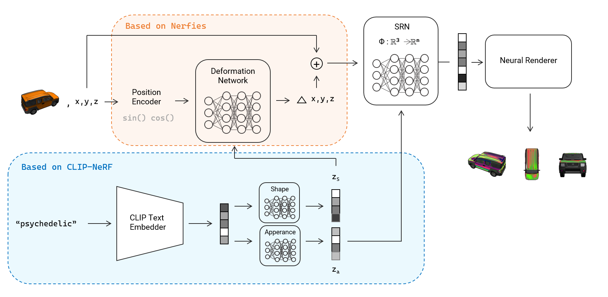
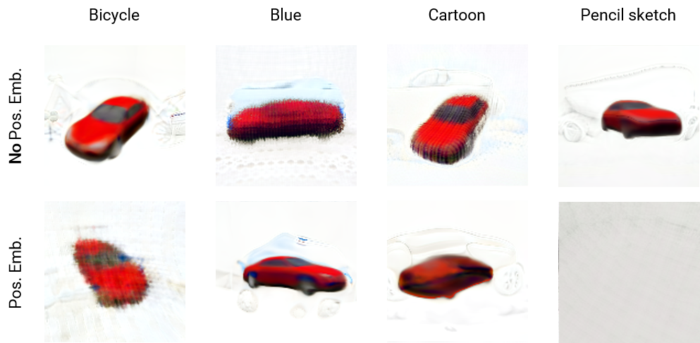

Neural style transfer refers to a class of deep-learning approaches for image stylization. Existing methods often decouple the desired “style” and “content” into two reference images, and target an output in image space. However, this solution falls short of human perception on two major fronts: it is limited to 2D inputs, and requires a reference image before developing an understanding of the target style. With the advent of 3D neural fields and state-of-the-art text-embedding models (such as CLIP), we explore a possible solution to these shortcomings. The goal of this project is to develop 3D scene representations that capture style given by a text condition. Specifically, we allow scene representation networks to learn from a CLIP-based loss to ultimately parameterize a stylized version of the original scene.
Originally proposed by Gatys et al. [1], neural style transfer began with convolutional networks that learned representations separately targeting the content and style of an image. The stylized output was then produced by jointly minimizing the distance between these two target representations and the synthesized image’s features. Since this seminal work, numerous papers have modified its approach, with CNNs replaced by models such as transformers [2] and diffusion models [3]; target applications, such as a time-of-day transfer network for architecture photography [4]; data modalities, including language [5]; and other aspects of the original solution. CLIPstyler, introduced by Kwon and Ye [8], is a particularly relevant work that breaks from the dependence of a reference style image by featurizing text conditions with the pre-trained CLIP embedding model.
More recently, researchers have shown that 3D scenes can also be stylized. Like the original work, Chiang and Tsai et al. [6] learn disentangled representations of geometry and appearance before applying style information to the implicit scene representation. This approach still depends on a reference image from which to extract style information. To loosen this constraint, Jin et al. [7] propose LASST, an algorithm that conditions on text instead of images by featurizing style prompts with a pre-trained CLIP encoder. However, their algorithm requires a scene mesh and phrases that describe the target scene, which can be infeasible in space-constrained applications and are limited to certain spatial resolutions.
Scene representation networks, introduced by Sitzmann et al. [9], implicitly store a 3D scene in a continuous function that maps world coordinates to embeddings. Like meshes, SRNs enforce 3D structure; additionally, they are more memory-efficient and can operate at higher spatial resolutions.
Our proposed method draws inspiration from LASST and CLIPstyler’s usage of text prompts (which are easier to source for arbitrary styles), and LASST’s 3D scene reconstruction pipeline to build an SRN capable of style transfer. We use the deformation network from Nerfies to allow for shape deformations when appropriate (e.g. when prompts such as "bicycle" or "truck" are included).
We draw inspiration from the CLIP-NeRF and Nerfies methods, where a text prompt is featurized with a pre-trained CLIP encoder (from CLIP-NeRF) and shape and appearance embeddings are learned (Nerfies). See the diagram below for an overview:

We try the following prompts, each with and without Fourier position encodings:
Here is a link to my result videos. The naming convention is: (style)_(style_loss_weight)_(position_embedding)_(video_num)_gt_comparisons.mp4.
Below are some screenshots of results with lambda_style (CLIP loss weight) of 1x and 2x:
Above: Results with and without position encodings on the four prompts described in Methods, and lambda_style=1.
Above: Results with and without position encodings on the four prompts described in Methods, and lambda_style=2. In most cases, the style transfer is performed more distinctly than when lambda_style=1, yet does not collapse into entirely-blank renderings (which happens with higher weights).
Though we did not successfully achieve style transfer, we make a couple of observations: